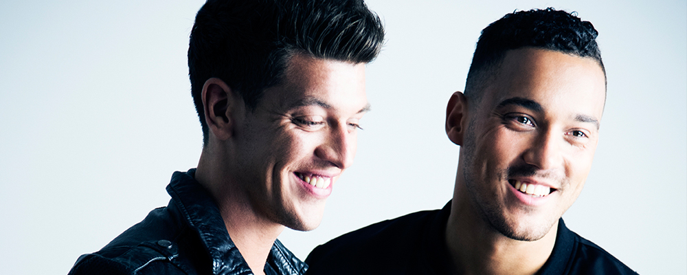

LINEUP INFO
AUDIOTRICZ
더치 하드스타일의 떠오르는 신흥 듀오, AUDIOTRICZ!

"Two passionate music lovers, one ambition and non-stop perseverance and dedication are just a few key ingredients that construct one of the fastest rising acts in the hardstyle scene, Audiotricz. The two masterminds behind the act, Leon Benschop and Kenneth Kroes grew up with a strong friendship and also a shared passion for listening to and producing music. With both boys having a solid background in sound design within other genres of electronic dance music, their sole focus shifted to hardstyle which has seen them embarking on an exciting and memorable journey to the top. After signing to Scantraxx Recordz in 2013, their career kicked off at a lightning bolt pace when their remix with Atmozfears for "Sparks" by Fedde Le Grand and Nicky Romero was dropped. The impact that this modern classic had on the hardsTwo passionate music lovers, one ambition and non-stop perseverance and dedication are just a few key ingredients that construct one of the fastest rising acts in the hardstyle scene, Audiotricz."
Audiotricz는 Leon Benschop와 Kenneth Kroes로 이루어진 네덜란드 출신 하드스타일 듀오이다. 2013년 더치 하드스타일 명문 레이블, Scantraxx를 통해 첫 EP, [We Are Audiotricz E.P.]를 발매하며 씬에 데뷔한 듀오는 빠르게 명성을 쌓으며 Defqon.1, Hard Bass, XXlerator Outdoor, Qlimax 등의 유명 하드스타일 페스피벌 무대에 이름을 올렸다. 하드스타일에 빅룸, 프로그레시브 하우스의 요소들이 섞인 강렬한 하드스타일 음악을 들려주는 Audiotricz가 Q-Dance와 함께 2017 서울 월드 디제이 페스티벌로 한국팬들을 만난다.
Audiotricz는 Leon Benschop와 Kenneth Kroes로 이루어진 네덜란드 출신 하드스타일 듀오이다. 2013년 더치 하드스타일 명문 레이블, Scantraxx를 통해 첫 EP, [We Are Audiotricz E.P.]를 발매하며 씬에 데뷔한 듀오는 빠르게 명성을 쌓으며 Defqon.1, Hard Bass, XXlerator Outdoor, Qlimax 등의 유명 하드스타일 페스피벌 무대에 이름을 올렸다. 하드스타일에 빅룸, 프로그레시브 하우스의 요소들이 섞인 강렬한 하드스타일 음악을 들려주는 Audiotricz가 Q-Dance와 함께 2017 서울 월드 디제이 페스티벌로 한국팬들을 만난다.